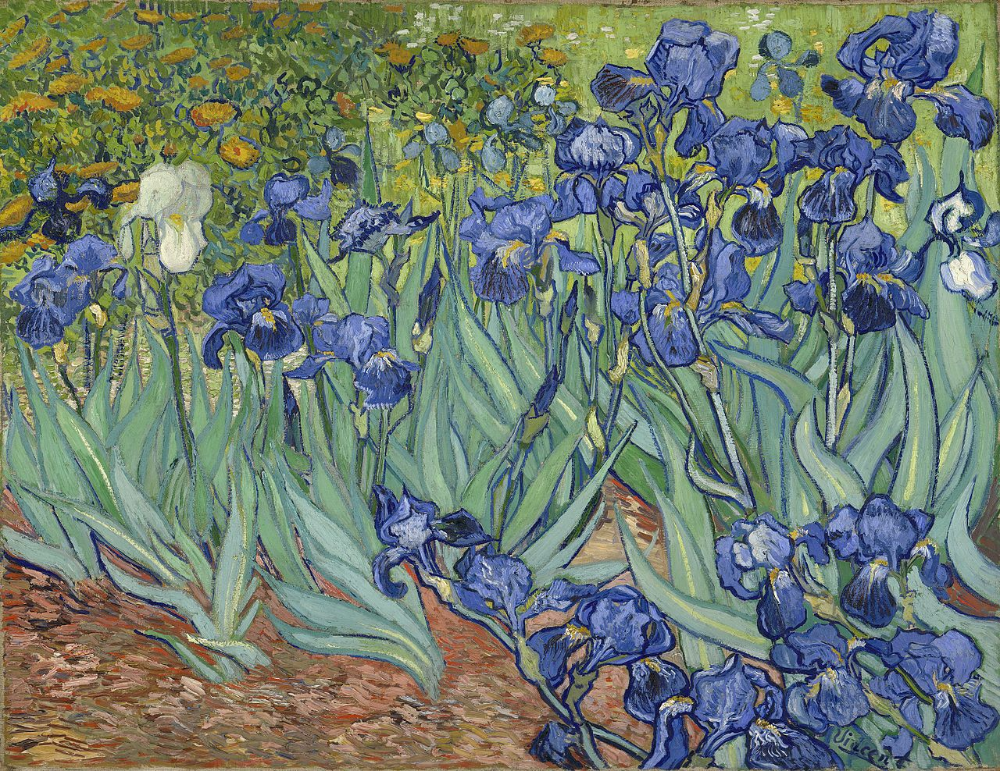

Vincent van Gogh was born on March 30, 1853 in Zundert, Netherlands. His father was Theodorus van Gogh, a minister of the Dutch Reformed Church and his mother was Anna Cornelia Carbentus. His interest in art began at a young age. As a child, he was described as serious and thoughtful. His early drawings were expressive but not as intense as some of his later works. Throughout his childhood, he felt unhappy at times, and described his youth as "austere and cold, and sterile".
While at school, Van Gogh only used watercolours for his art. Around early 1882, most of his commissioned drawings were met with disappointment, since he began at an elementary level as an adult. Around 1883, he switched to oil painting. He also began asking other well-known artists for technical advice. In November 1885, he visited Antwerp and later Paris to practise and learn more. During his stay in Paris, Van Gogh also experimented with a lighter palette for his artwork. He considered colour to have "a psychological and moral weight". Yellow meant the most to him because it symbolized emotional truth. Van Gogh aspired to be a painter of rural life and nature. He also employed symbolism in some of his works, as an attempt to capture the power he believed existed beyond the natural.
He died on July 29, 1890, after shooting himself with a gun. He was 37 years old.

"Normality is a paved road: it's comfortable to walk, but no flowers grow on it." - Vincent van Gogh